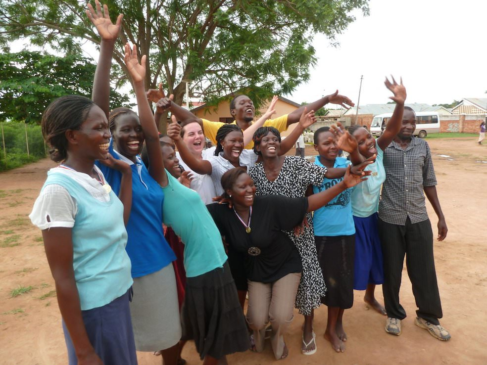

<div class="row">
  <div class="col-md-10 col-md-offset-1">
    <h2>Sheffield&ndash;Teso Health Link</h2>
    <p>
    <div id="carousel" class="carousel slide" data-ride="carousel">
      <div class="carousel-inner">
        <div class="item active"></div>
        {% for i in (2..39) %}
        <div class="item"></div>
        {% endfor %}
      </div>
      <a class="left carousel-control" href="#carousel" data-slide="prev">
        <span class="glyphicon glyphicon-chevron-left"></span>
      </a>
      <a class="right carousel-control" href="#carousel" data-slide="next">
        <span class="glyphicon glyphicon-chevron-right"></span>
      </a>
    </div>
    </p>
    <p class='lead'>
      The vision of <b>Sheffield Medical Group</b> (SMG) is to develop a sustainable, multidisciplinary link embracing primary and secondary care between Sheffield, UK and Kumi district in Uganda. Through this link we seek to provide inspiration, promote initiative, foster understanding and facilitate change for the mutual benefit of healthcare in the UK and in Uganda.
    </p>
    <p>
      <b>Teso Health Link</b> (THL) is the organisation through which SMG operates to meet these aims. Teso is a region in Eastern Uganda which comprises of 8 districts, including Kumi district. Within Kumi district and the neighbouring Ngora district, THL has developed a network of partnerships comprising hospitals, health centres, village health teams and a nursing and midwifery school.
    </p>
    <h3>
      Background
    </h3>
    <p>
      SMG was formed in 2007 and grew out of a wider vision to promote holistic practices within the NHS. Two strands were identified:
    </p>
    <p>
      <b>Patient care:</b>
      Seek to practise holistic medicine where the needs of body, mind and spirit could be addressed.
    </p>
    <p>
      <b>NHS staff:</b>
      Seek to improve morale and recover a sense of vocation amongst individuals and teams.
    </p>
    <p>
      Encouraging gratitude in the UK and increasing awareness of healthcare in developing nations were considered to be aims which could contribute to the overall vision. From this came the decision to develop an international health partnership under the auspices of the Tropical Health and Education Trust. (THET)
    </p>
    <p>
      THET connected us with Atutur hospital, a small government hospital serving a large rural population in Kumi district. The first visit of SMG to Atutur hospital was in October 2007 and, following this, the Atutur Hospital Support Network was established with other UK partners. Over the years we have formed further local partnerships beyond Atutur hospital and, in 2012, the link was renamed Teso Health Link to reflect the broader geographical and medical scope of our work.
    </p>
    <h3>Bridging gaps</h3>
    <p>
      In keeping with our vision to encourage holistic attitudes and practices within the NHS, SMG recognises a number of cultural, societal and institutional gaps which we seek to bridge through Teso Health Link.
    </p>
    <h3>Developed and developing countries</h3>
    <p>
      Discovering how healthcare is organised and delivered  in a developing country is  only the first step in a gradual, personal transformation which becomes possible through engagement in a health link. As relationships grow and initial unfamiliarities subside, opportunites develop for a deeper understanding of each others culture and worldview. Partnership at this level is very rewarding. Appreciation of what we have to offer our partners in terms of teaching and training is matched by humility as we are challenged by their perseverance, hospitality and strength of community.
    </p>
    <p>
      Gratitude for the abundance of provision in the west, including healthcare within the NHS, is a positive consequence of exposure to life in a low income country. Such gratitude can be shared by staff and patients in the UK as the work of the Link is publicised.
    </p>
    <h3>Clinicians and managers</h3>
    <p>
      Different priorities can cause tensions and misunderstanding of each others roles which, in turn may lead to poor teamwork, increased stress and lower morale. Bridging the gap between clinical and administrative/managerial staff by designing the link to include personnel from both disciplines has been a foundational principle of SMG.
    </p>
    <h3>Primary and secondary care</h3>
    <p>      
      Since the introduction of the purchaser/provider split in 1990 and all that has followed, traditional rivalry between these complementary disciplines has been sharpened by financial competition. At times this may be divisive and even destructive. Many different factors exacerbate the gap.
    </p>
    <p>
      To bridge this gap in as many ways as possible is in the best interests of staff, patients and the NHS as a whole. Links are one way to do this and SMG has been committed to developing the Sheffield – Kumi partnership as a joint primary/secondary care link from the start. Sharing a common, overseas vision and strategy and taking part in joint visits and tasks can lead to increased communication, understanding and morale.
    </p>
    <p>
      <a href='/contact.html'>Dr Chris Atkins</a>
      <br>
      Coordinator: Sheffield Medical Group, Teso Health Link
    </p>
  </div>
</div>
